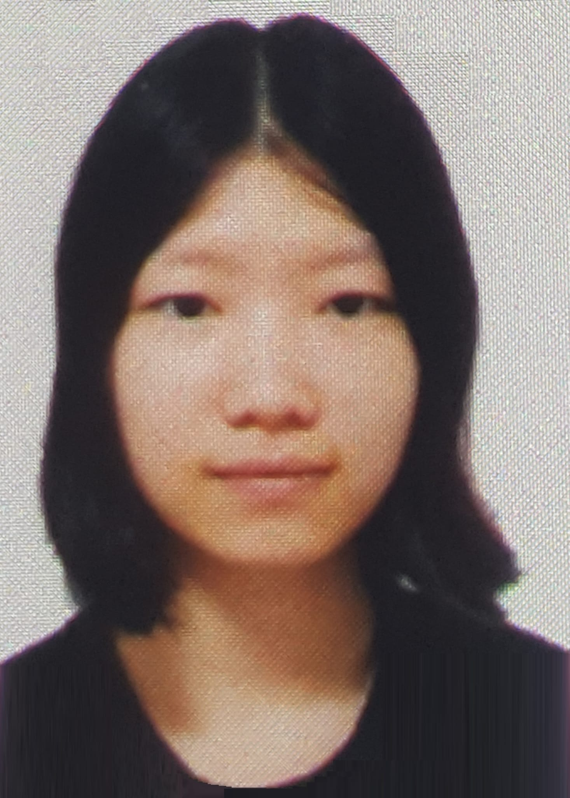
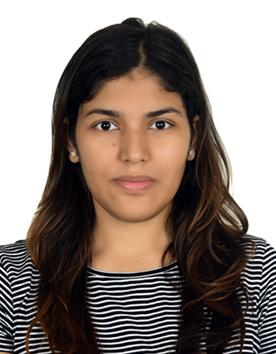
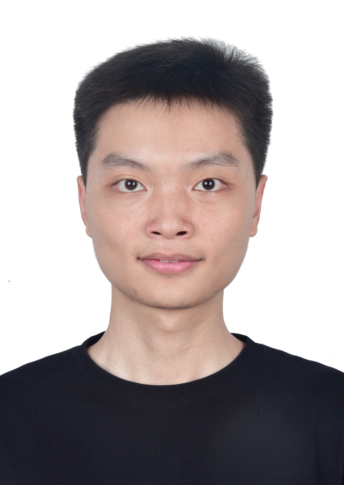
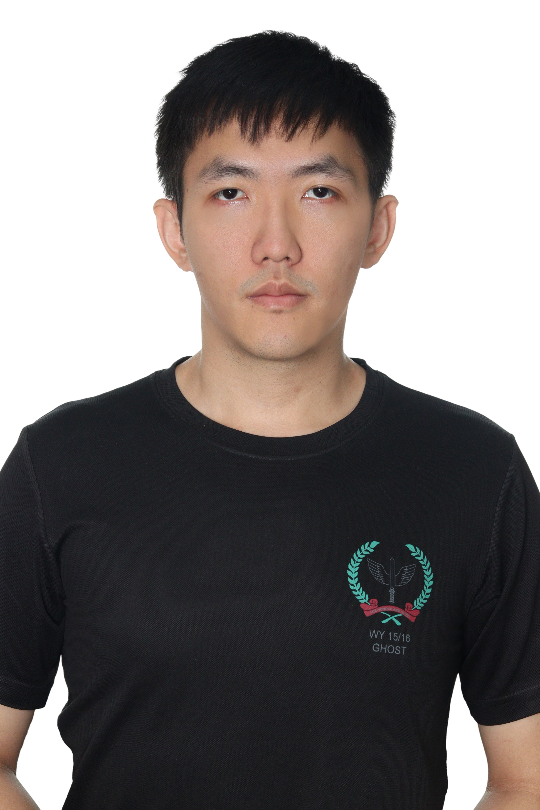

Dr. Sengthavy Phommixay
Senior Research Fellow

Senior Research Fellow
Research Fellow
Research Fellow

PhD Student

PhD Student

PhD Student

PhD Student
| Name | Project Title | Year |
|---|---|---|
| Wu Yitong | Optimal Home Energy Management System with Renewable Energy and Storage Integration | 2025-2026 |
| Wang Feiran | Optimal Home Energy Management System with Renewable Energy and Storage Integration | 2025-2026 |
| Peng Junjie | Deep Learning Model for Accurate PUE Prediction in Data Centers | 2025-2026 |
| Fu Guanyu | Deep Learning Model for Accurate PUE Prediction in Data Centers | 2025-2026 |
| Cheng Sheng | Physics-Inspired Evolutionary Optimization for Complex Problem Solving | 2025-2026 |
| Name | Thesis Title | Degree | Year |
|---|---|---|---|
| Yingqi Liang | Robust Data-Driven Sparse Sensitivity Estimation: Theory and Applications to Cyber-Physical-Social Power Systems | PhD | 2020-2024 |
| Can Berk Saner, John | Modeling and Optimization Frameworks for Electric Vehicle Charging: From Scheduling to Integrated Planning | PhD | 2020-2024 |
| Gnana Sambandam | Low Frequency Modulation Techniques For Multilevel Converters for Solar Application | PhD | 2014-2018 |
| Bal Satarupa | Soft Switching Current-Fed Three-Phase Power Converters for Micro-Grid Applications | PhD | 2014-2018 |
| Rahul Mehta | Intelligent Energy Management In Power Distribution Systems | PhD | 2013-2017 |
| Dhivya Sampath Kumar | Impact Analysis of Distributed Generators on the Protection and Stability of Power Systems | PhD | 2013-2017 |
| Anurag Sharma | Multi-Agent Based Fault Restoration for Distributed Energy Systems | PhD | 2012-2016 |
| Anupam Trivedi | Multi-Objective Power System Scheduling Using Evolutionary Algorithms | PhD | 2011-2015 |
| Quan Hao | Uncertainty Modeling in Distributed Power Systems | PhD | 2010-2014 |
| Zhao Xinjie | Iterative Learning Control for Intelligent Transportation Systems | PhD | 2009-2013 |
| Thillainathan Logenthiran | Multi-Agent System for Control and Management of Distributed Power Systems | PhD | 2009-2013 |
| Liu Chao | Electricity Markets | MSc | 2012-2013 |
| Congmiao Li | Distributed Multi-Agent Based Traffic Control | MSc | 2012-2013 |
| Ly Trong Trung | Co-Evolutionary Bidding and Cooperation Strategies for Buyers in Power Markets | MEng | 2010-2012 |
| Vishal Sharma | Electricity Price Time Series Forecasting in Deregulated Markets Using Recurrent Neural Network Based Approaches | PhD | 2008-2012 |
| Balaji Parasumanna Gokulan | Distributed Multi-Agent Based Traffic Management System | PhD | 2008-2012 |
| Lau Yong Fu | An Agent-Based Computational Economics Model of the National Electricity Market of Singapore | MEng | 2010-2012 |
| Bharat Menon | Decision Making in Multi-Agent Systems | MSc | 2011-2012 |
| Sangeetha Menon | Learning in Multi-Agent Systems | MSc | 2011-2012 |
| Shivangi Gupta | Neural Networks for Prediction and Control of Solar PV Systems | MSc | 2011-2012 |
| Yik Jiawei | Modeling and Planning of Manpower Supply and Demand | MEng | 2009-2011 |
| Dinesh Kumar Ambalavanan | Multi-Agent System for Restructured Energy Systems | MSc | 2010-2011 |
| Irfan Mulyawan Malik | Optimum Power Flow Using Flexible Genetic Algorithm Model in Practical Power Systems | MEng | 2008-2010 |
| Vineet Yadav | Short-Term Load Forecasting with the SOM-Based Hybrid Neural Networks | MEng | 2005-2009 |
| Lily Rachmawati | Incorporation of Human Decision Making Preference into Evolutionary Multi-Objective Optimization | PhD | 2004-2008 |
| Deng Heng | High-Performance Digital Control of UPS Inverters | PhD | 2006-2008 |
| Xavier Jean Albert German | A Distributed, Cooperative Multi-Agent System for Real-Time Traffic Signal Control | MEng | 2006-2008 |
| Vasanth Subramanyam | Evolution of Artificial Neural Network Controller for a Boost Converter | MEng | 2003-2006 |
| Choy Min Chee | Cooperative, Hybrid Multi-Agent Systems for Distributed, Real-Time Traffic Signal Control | PhD | 2005-2006 |
| Chazelas Jerome Elie Germain | Multi-Agent System for Modelling the Restructured Energy Market | MEng | 2005-2006 |
| Tran Quoc Long | An Adaptive Model for Multi-Modal Biometrics Decision Fusion | MEng | 2003-2005 |
| Ng Win Siau | Power Harmonics Analysis for Electrical Device Signature Identification Using Artificial Neural Network and Support Vector Machine | MEng | 2001-2005 |
| Kanakasabai Viswanathan | Dynamic Performance Improvement in Boost and Buck-Boost-Derived Power Electronic Converters | PhD | 2003-2004 |
| Seow Tian Hou | Particle Swarm Algorithms for Solving Highly Constrained Time-Tabling Problem | MSc | 2003-2004 |
| Koay Chin Aik | Multi-Objective Optimization Using Stimulated Evolution | MSc | 2002-2004 |
| Marwaha Shivanajay | Computationally Intelligent Routing Strategies for Mobile Wireless Ad Hoc Networks | MEng | 1997-2001 |
| Jin Xin | Development of Adaptive Expressway Incident Detection Using Systems Genetic Algorithm and Neural Networks | PhD | 1996-1998 |
| Xu Xiaoyan | Improved Optimization Techniques for Signaling Layout Design - Mass Rapid Transit System | MEng | 1996-1998 |
| Tan Swee Sien | Adaptive Short-Term Electrical Load Forecaster Using Artificial Neural Networks | MEng | 1996-1998 |
| Low Jiun Shiah | Railway Traction Substation Optimizations with Tabu Search Approach | MEng | 1996-1998 |
| Chen Jinming | Fuzzy Expert System for Fault Diagnosis of Power Systems | MEng | 1995-1997 |
| Name | Thesis Title | Year |
|---|---|---|
| Muhammad Hafeez Bin Salim | Protection of Microgrids by Implementing a Decentralized Protection Using Adaptive Overcurrent Relays with Communication | 2018-2019 |
| Tiang Yao Tian | Design and Implementation of Smart Microgrid Energy Management System Using Software Agents | 2018-2019 |
| Anirudh Banerjee | Stability of Microgrids | 2018-2019 |
| Zhang Yayu | A Unified Non-dominated Sorting Genetic Algorithm for Multi-objective Optimization Problems | 2018-2019 |
| Ashiq Ali Bin Mohamed Kassim | Smart Grid Demand Side Management with Electric Vehicles | 2017-2018 |
| Farwa Cheema | Forecasting of Electricity Price Using Deep Learning Networks | 2017-2018 |
| Lau Hui Chye Preston | Solar Photovoltaic System Guide and Improvement of Transient Response of PV Systems Using Virtual Inertia | 2017-2018 |
| M Saboor-Ul-Haseena | Uncertainty Handling in Electricity Market Operations | 2017-2018 |
| Teo Jin Kun | Optimal Energy Management of Energy Storage Systems for Different Grid Applications | 2017-2018 |
| Hau Chong Aih | Optimal Allocation of ESS in Distribution Network | 2016-2017 |
| Kim Sohyeon | The Integration of Energy Storage System into Ship Power System: Power Optimisation and Risk Assessment of Lithium-Ion Battery Hybrid Ships with the Reduction of Greenhouse Gases | 2016-2017 |
| Min Junhua | Congestion Management in Smart Distribution Systems | 2016-2017 |
| Li Zixuan | Multi-objective Optimal Energy Consumption Scheduling in Smart Grids | 2015-2016 |
| Nurul Amalina Bte Aziz | A Deterministic Demand Response System with Smart Home Energy Management Devices | 2015-2016 |
| Chen Ziqing | Active Network Management in Smart Distribution Systems | 2015-2016 |
| Zhao Yulin Rachel | Optimal Sizing and Placement of Energy Storage Systems in Distribution System | 2015-2016 |
| Han Tianyi | Determining Optimal Location and Size of Distributed Generation Resources Considering Harmonic and Protection Coordination Limits | 2014-2015 |
| Samson Shih Shan Yao | Multi-Objective Heuristic EV Charging/Discharging Scheduling Algorithm | 2014-2015 |
| Tang Yanan | Multi Objective Optimal Energy Consumption Scheduling in Smart Grids | 2014-2015 |
| Sanjana Rajgariha | Autonomous Demand-Side Management for Energy Consumption Scheduling in a Smart Grid | 2013-2014 |
| Sudharshan Murali | Multi-objective Security-Constrained Wind-Thermal Power System Scheduling | 2013-2014 |
| Chew Zhen Hui | Wind Turbine Modeling: Control Systems and Efficiency Factors | 2012-2013 |
| Lee Jin Yuan | Key Renewable Energy Development - Solar Panels | 2012-2013 |
| Chia Sy En | Distributed Control Algorithms for Enhanced Operation of Smart Distribution System | 2012-2013 |
| Ei Phyu | Power System Demand Side Management | 2012-2013 |
| Lau Yong Fu | An Agent-Based Computational Economics Model of the National Electricity Market of Singapore | 2011-2012 |
| Xu Zhihong | Uncertainty Handling in Unit Commitment Problem | 2011-2012 |
| Koh Wen Mei Vanessa | A Multi-Agent Approach to Decentralised Demand Side Management | 2011-2012 |
| Chee Bing Kiat | Multi-Objective Thermal Generator Scheduling | 2011-2012 |
| Payodh Malhotra | Computational Intelligence Techniques for Context-Aware Vehicle Routing | 2010-2011 |
| Tan Zong Shun | Demand Side Management of a Microgrid | 2010-2011 |
| Le Thanh Xuan Yen | Optimal Operation of Solar Generation Integrated Power System | 2010-2011 |
| Shambhavi Gupta | Short-Term Prediction of Solar Electricity Generation | 2010-2011 |
| Marzia Tabassum | Evolutionary Algorithms for Solving High Dimensional Problems | 2010-2011 |
| Rollen Gomes | Short Term Price Forecasting in Electricity Markets | 2010-2011 |
| Yik Jiawei | Modelling and Planning of Manpower Supply and Demand | 2009-2010 |
| Lin Phyo Naing | Estimation of Solar Power Generating Capacity | 2009-2010 |
| Chen Yuanwei Ezekiel | Development of 3D Terrain Mapping Module of an Archaeological and Exploration Robot | 2009-2010 |
| Gundam Sujana | Correlation Analysis of Solar Power and Electric Demand | 2009-2010 |
| Ly Trong Trung | Evolutionary Computation for Optimization of Renewable Energy Sources | 2009-2010 |
| Goh Jun Lin | Development of Intelligent Optimization Algorithm for Distributed Renewable Energy Sources | 2008-2009 |
| Siew Tuck Sing Terence | Research on Photovoltaic (PV) Inverter Technologies | 2008-2009 |
| P. Dinidu Sachitra Dias | Multi-Agent System for Modeling of Distributed Energy Sources | 2008-2009 |
| Zhang Youwei | Automatic Design of Fuzzy Neural Network | 2008-2009 |
| Li Bingrui Joel | Power Market Modeling with Type-2 Fuzzy Logic and Game Theory | 2007-2008 |
| Zhang Guofan | Hybrid Evolutionary Model for Financial Series Forecasting | 2007-2008 |
| Ali Muzaffar Cheema | Evolutionary Algorithm for Creating Visual Art | 2007-2008 |
| Rehman Rafiq | Time Series Forecasting Using Neural Networks and Wavelet Techniques | 2007-2008 |
| Ng Yee Gue | Evolving Cooperative Bidding Strategies in a Power Market | 2007-2008 |
| Wang Jiayuan | Data Mining in Stock Picking | 2007-2008 |
| Ow Yonghong | Optimization in Data Mining for Online Advertising Data | 2007-2008 |
| Tan Jiecong Kenneth | Establishment of an Effective Capacitance/Temperature Characterization Capability | 2007-2008 |
| Name | Email Address | Year |
|---|---|---|
| Zhang Yuping | zyp@njust.edu.cn | Jan 2026-Jan 2027 |
| Sun Yichen | yichensun@mail.shiep.edu.cn | Jan 2026-Jan 2027 |
| Yang Yu | yangyu1687@gmail.com | Oct 2025-May 2026 |
| Ban Xuanxuan | xxuanban@163.com | Aug 2025-May 2026 |
| Liu Jiajia | jiax2liu@gmail.com | Apr 2025-Apr 2026 |
| Wang Kai (Kevin) | wangkai1998@seu.edu.cn | Apr 2025-Mar 2026 |
| Wang Kaifeng | qq861554820@outlook.com | Nov 2024-Nov 2025 |
| Zeng Xin | ee_xinzeng@163.com | Jan 2025-Jan 2026 |
| Wang Yuanyuan | wyy12689@whut.edu.cn | Aug 2023-Aug 2024 |
| Chen Jianrun | epjrchen@163.com | Dec 2023-Jan 2025 |
| Deng Haoran | denghryanyan@163.com | Nov 2023-Nov 2024 |
| Chen Qifan | qf_chen@foxmail.com | Aug 2024-Nov 2024 |
| Zhao Fei | zhaofei1@epri.sgcc.com.cn | Oct 2023-Apr 2024 |
| Wang Yanxin | yanxinwang@xjtu.edu.cn | Oct 2023-Oct 2024 |
| Wang Sen | senwanghh@gmail.com | Oct 2022-Oct 2023 |